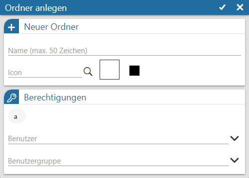
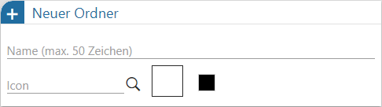
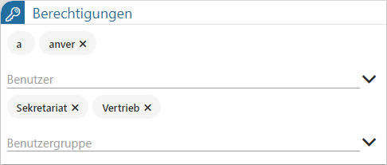

Jeder Ordner des WinLine Share kann u.a. mit einem Namen und einer individuellen Berechtigungsvergabe versehen werden.

Folgende Einstellungen stehen zur Verfügung:
Neuer Ordner / Ordneroptionen

Ø Name
An dieser Stelle wird der Name des Ordners hinterlegt. Die Sortierung innerhalb der Ordnerübersicht erfolgt, abhängig von der Ordnerebene, alphanumerisch.
Ø Icon
Über das Lupensymbol kann ein vom Standard / abweichendes Ordnersymol ausgewählt werden. Zusätzlich ist es möglich dem Icon eine individuelle Farbe zuzuweisen.
Berechtigungen

Ø Benutzer / Benutzergruppen
…